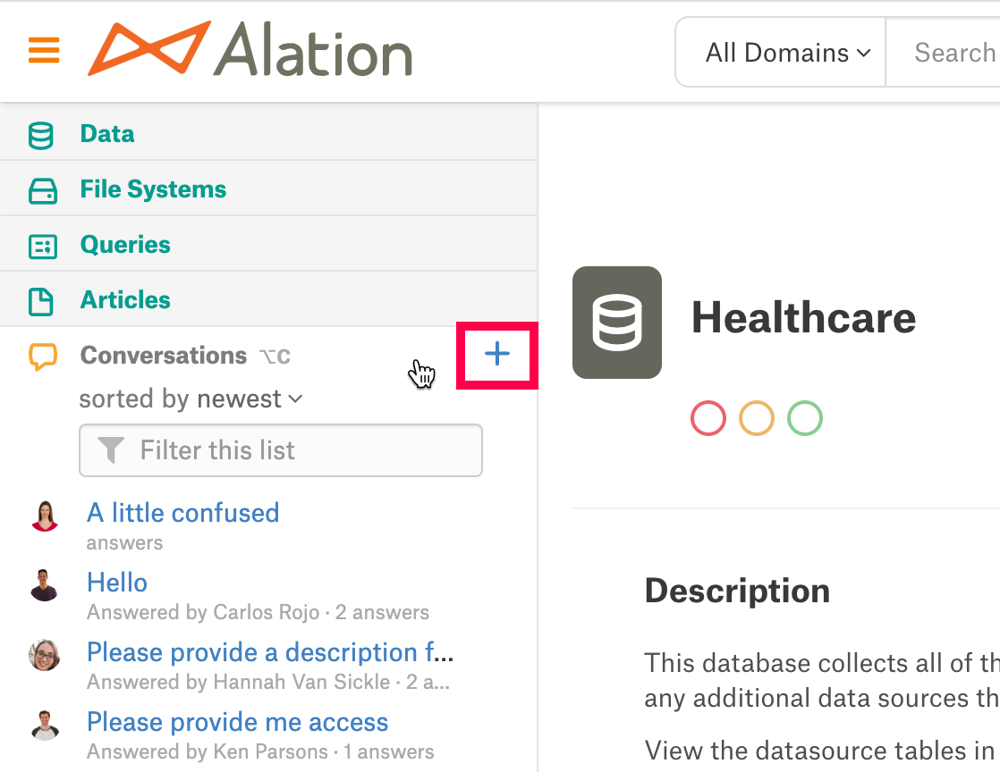
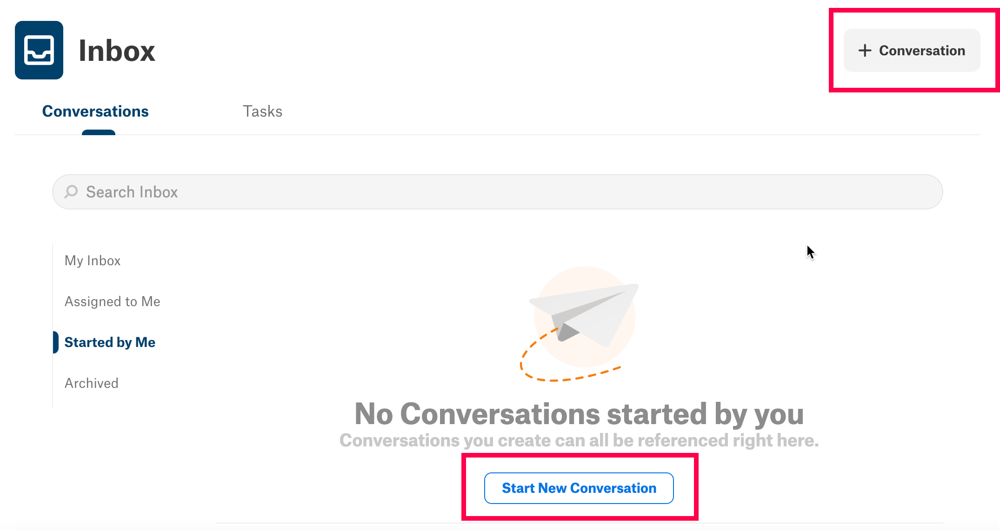
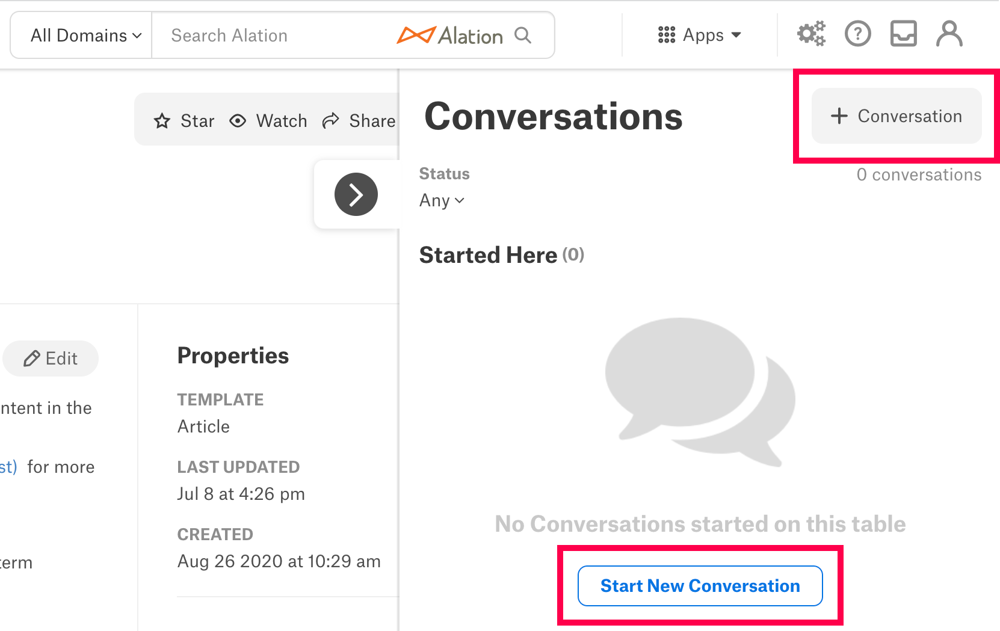
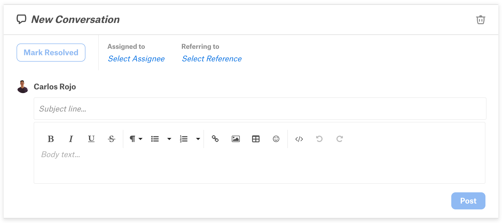
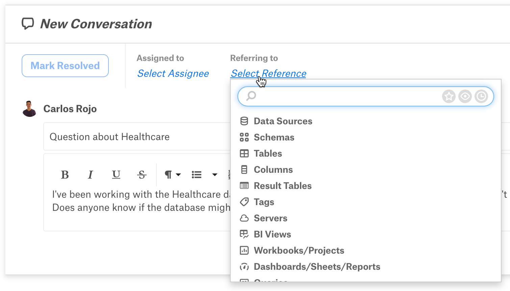
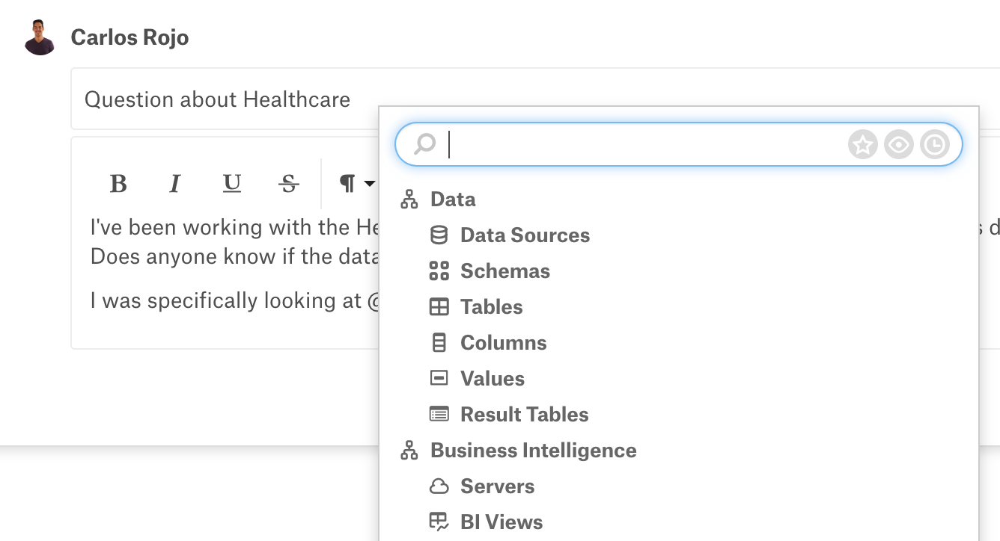

Posting a New Conversation¶
Alation Cloud Service Applies to Alation Cloud Service instances of Alation
Customer Managed Applies to customer-managed instances of Alation
If you can’t find an existing Conversation in the catalog about a topic, you can post a new one.
Initiating a Conversation makes you the Conversation’s author and allows you to shape the discussion by filling in the Conversation’s components. In Alation, authors also have the ability to edit or delete their Conversation at any time after it’s posted. (For instructions on editing and deleting Conversations, see Interacting with Conversations.)
You can create a new Conversation in Alation from the same parts of the catalog interface you use to search for existing Conversations. Once you navigate to one of these areas, it only takes a few steps to post a new Conversation. The sections below will guide you to open a new Conversation page and then add details before posting your Conversation.
Opening a New Conversation¶
The Conversation-creating features in your Inbox, the Conversations panel, and the Conversations slideout allow you to open a new Conversation from wherever you are in the catalog. You can start a Conversation about any catalog object from your Inbox and the Conversations panel of the left sidebar. You can also open a new Conversation referring to a particular catalog object from its Conversations slideout.
Once you’ve navigated to the Conversations panel, your Inbox, or a Conversations slideout (see Finding Conversations and Using Your Inbox for instructions), use the directions below to open a new Conversation.
Conversations Panel¶
You can create a Conversation from the Conversations panel if the left sidebar is expanded or the Conversations panel is open. (See Finding Conversations for screenshots and instructions on opening the Conversations panel.)
When you hover over the Conversations panel in one of these states, a plus icon ( + ) appears in the panel’s upper-right corner. Clicking this button will open a new Conversation in full-page view.
{kind=link}
Inbox¶
Your Inbox includes a + Conversation button in its upper-right corner. If you click the button while inside the Conversations tab, a new Conversation page will open in your Inbox’s reading pane.
Note
If you have not yet started any Conversations in Alation, you can also initiate a Conversation from the Started by Me area of your Inbox. Click the Start New Conversation button below “No Conversations started by you” to open a new Conversation page in the reading pane.
Conversations Slideout¶
Just like your Inbox, the Conversations slideout has a + Conversation button in its upper-right corner. Clicking the button will open a new Conversation page within the Started Here area of the slideout.
Conversations started in the slideout automatically refer to the object page you’re on, and so the Referring to field will not be visible inside the new Conversation page. To start a Conversation referring to a different catalog object, open a new Conversation page from the Conversations panel or the Inbox.
Note
If there aren’t any Conversations in the catalog that reference the object page you’re on, the Started Here area won’t contain any Conversations. In this case, there are two different ways that you can open a new Conversation in the slideout:
Click the + Conversation button.
Click the Start New Conversation button visible in the Started Here area.

Filling in Required Fields¶
When you open a new Conversation using one of the three methods described above, Alation creates a new Conversation catalog page and displays it in your catalog interface. The new Conversation page will appear a little different depending on the location you opened it from, but it will contain fields for the Conversations components.
You are required to fill in the subject and body fields before you can post the Conversation to the catalog. After you create a subject line and enter your question or discussion point in the body section, Alation will enable the Post button. You can click Post to publish your Conversation in the catalog now, or use other Conversation components to add catalog connections to the Conversation first.
Adding Connections¶
Before you post your Conversation, you can use the Assigned to and Referring to fields and the body section to connect your Conversation to specific catalog users or object pages. You’re not required to add connections in order to post your Conversation, but they can help future users find and understand it.
The Assigned to and Referring to fields are Conversation components that allow you to select an assignee and catalog object as the Conversation’s main reference points. As the Conversation’s author, you can also add users and catalog objects to the Conversation by including @-mentions in the body section.
The sections below explain how to include a reference, an assignee, or @-mentions in your Conversation. After you finish adding connections to your Conversation, click Post to publish it.
Assigned to¶
To learn about the Assigned to field and a Conversation assignee’s role, see the Assigned to section in the Conversations topic.
Starting in 2023.3, you can choose multiple users or groups as the Conversation’s assignees. In earlier versions, you can only assign a single user.
To add an assignee:
Click the Select Assignee link in the Assigned to field. A user-search dialog will appear below the field.
Find the catalog users or groups you’d like to assign to the Conversation. The search box allows you to narrow your results in different ways:
Enter text in the search box to filter the list to catalog users and groups that match your search terms.
Click Users or Groups to show only users or only groups.
Click the clock icon displayed on the right inside the search box. The list will be updated so that you only see users whose user pages you’ve visited recently.
When you see a user or group you want to assign in the search results, select their name from the list. They will appear in the Assigned to field, and Alation will send a notification to their Inbox once the Conversation is posted.
Referring to¶
To learn about the Referring to field and a reference’s role in a Conversation, see the Referring to section in the Conversations topic.
If you want to add a catalog object as a Conversation’s reference, follow the steps below.
Note
You can’t add a reference to a Conversation started in the Conversations slideout. The Conversation will automatically refer to the object page the slideout’s on and the Referring to field will not be visible. You can change the Conversation’s reference by posting it, then opening it in your Inbox or full-page view.
Click the Select Reference link in the Referring to field. An object-search dialog will appear below the field.
Find the catalog object you’d like to add as the Conversation’s reference. The object-search dialog allows you to use the search box or filter the object list by type in order to narrow your search.
To filter the object list by an object type before searching, select one from the list inside the object-search dialog.
Enter text in the search box. The object list will be updated to display only results that match your search terms.
Note
You can narrow the list of results further using two different methods:
Click the star, eye, and clock icons to toggle them on. Depending on which icons are in use, the object list will display only results that you have starred, are watching, or recently visited.
In the Showing field below the search box, click Everything. Select an object type from the dropdown menu that appears. The object list will be updated to display only search results of that object type.
When you see the catalog object you’d like to refer to in the object list, select it. The object’s title will appear in the Referring to field, and the Conversation will be added to the Conversations slideout on the object’s catalog page.
{kind=link}
Body @-mentions¶
You can connect a Conversation to additional objects and users with @-mentions. Conversation authors can use @-mentions to name important users and catalog objects in their Conversation’s body section.
The Body section of the Conversations topic explains the connection that @-mentions create between the Conversation and the user or object being mentioned. If you want to add an @-mention to your Conversation, follow the steps below.
Type the @ character. A search dialog will appear.
Find the catalog object or user you’d like to @-mention. The search dialog allows you to use the search box or filter the results list by type in order to narrow your search.
To filter the results list by an object type or user groups before searching, select one from the list inside the search dialog.
Enter text in the search box. The results list will be updated to display only results that match your search terms.
Note
You can narrow the list of results further using two different methods:
Click the star, eye, and clock icons to toggle them on. Depending on which icons are in use, the object list will display only results that you have starred, are watching, or recently visited.
In the Showing field below the search box, click Everything. Select an object type or user group from the dropdown menu that appears. The object list will be updated to display only search results that are that object type or belong to that user group.
When you see the user or object you’re looking for in the search results, select it from the list. The object or user page will be embedded in the Conversation as a link.
If you @-mentioned a user, Alation will send a notification to their Inbox after the Conversation is posted.
{kind=link}
Next¶
Once a Conversation is posted, every catalog user (including the author) is able to view it, reply to it, and bring it to other users’ attention. For more information about what you can do with existing Conversations, go to Interacting with Conversations.
You can also learn more about Conversations by reading these topics: